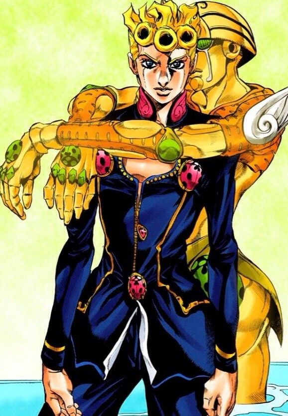

チャプター
1
彼女のことをよく知る大人たちは、僕が今こうして生きているのは、奇跡だとみんな口をそろえて言う。僕もそう思う。僕にとっての世界は新興宗教のように飾られているイギリス人の父親の写真があり、彼女が雇ったベビーシッターの人が用意するものが雑多に並べられた六畳間だけだった。ベビーシッターの人たちも二度と会うことがなかったのは、きっと彼女にお金を渡していた人たちのせいなんだろうとは思う。
2

過度なストレスと劣悪な環境にさらされ続けたせいだろうか、１９８７年の１２月下旬から２月上旬の５０日間、僕は原因不明の高熱にうなされて生死の淵をさまよっていた。カレンダーもテレビもない世界で、日付だけが印象に残っているのは、もうこの世にはいないベビーシッターの女性が教えてくれたからだろう。彼女はとても僕によくしてくれた。朦朧とした意識の中で、抱きしめられた記憶だけがぼんやりと残っている。
3

そして、１２月ごろだったと思う。彼女が原因不明の病に倒れて、彼が救急車を呼ばなければ、１か月近く放置されていた僕はきっと死んでいたに違いない。その日はとても騒がしい日だった。遠くから聞こえるサイレンがどんどん近づいてきて、僕の住んでいたマンションにとまった。たくさんの人たちが押しかけてくる音がして、僕は毛布にくるまって震えていた。金の無心に来る彼女の恋人はたくさんいた。
4

彼女のことをよく知る大人たちは、僕が今こうして生きているのは、奇跡だとみんな口をそろえて言う。僕もそう思う。僕にとっての世界は新興宗教のように飾られているイギリス人の父親の写真があり、彼女が雇ったベビーシッターの人が用意するものが雑多に並べられた六畳間だけだった。ベビーシッターの人たちも二度と会うことがなかったのは、きっと彼女にお金を渡していた人たちのせいなんだろうとは思う。
5

過度なストレスと劣悪な環境にさらされ続けたせいだろうか、１９８７年の１２月下旬から２月上旬の５０日間、僕は原因不明の高熱にうなされて生死の淵をさまよっていた。カレンダーもテレビもない世界で、日付だけが印象に残っているのは、もうこの世にはいないベビーシッターの女性が教えてくれたからだろう。彼女はとても僕によくしてくれた。朦朧とした意識の中で、抱きしめられた記憶だけがぼんやりと残っている。
6
そして、１２月ごろだったと思う。彼女が原因不明の病に倒れて、彼が救急車を呼ばなければ、１か月近く放置されていた僕はきっと死んでいたに違いない。その日はとても騒がしい日だった。遠くから聞こえるサイレンがどんどん近づいてきて、僕の住んでいたマンションにとまった。たくさんの人たちが押しかけてくる音がして、僕は毛布にくるまって震えていた。金の無心に来る彼女の恋人はたくさんいた。。